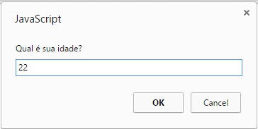

JavaScript
Aula 01 - Introdução à JavaScript
Igor Conrado Alves de Lima - prof.igor@microcamp.com.br
O que vocês verão nesse módulo de JavaScript?
- Características básicas do JavaScript
- Variáveis, strings e matrizes
- Estruturas de decisão e repetição
- Funções e eventos
- Objetos
- Validação de formulários
O que é JavaScript?
- É linguagem de programação mais utilizada na Web do lado cliente.
- Foi criada para trabalhar em conjunto com HTML e CSS a fim de produzir conteúdo web dinâmico.
- Com ela é possível criar websites dinâmicos, jogos, aplicações para desktop e smartphone, e muito mais. Exemplos: Spotify, HexGL, Brackets, etc.
História do JavaScript
- Criada em 10 dias em Maio de 1995 por Brendan Eich da Netscape sob o nome de Mocha
- Em Setembro de 1995, quando lançada a versão beta, teve seu nome mudado para LiveScript
- Por último, em Dezembro do mesmo ano recebeu o nome de JavaScript
Atenção: JavaScript não é Java
"Java está para o Javascript assim como Bola está para Bolacha."
Onde o JavaScript é executado?
Inicialmente, JavaScript era utilizado somente nos navegadores (lado cliente).
Hoje, com a evolução das engines de JavaScript (ex. SpiderMonkey e V8), podemos rodar JS no lado servidor (ver Node.js) e até mesmo gerenciar bancos de dados (ver CouchDB e MongoDB).

Mãos à obra! - alert()
Abram o console do seu navegador e digitem o seguinte comando:
alert("Olá, Microcamp!");E executem apertando ENTER.
Esse comando deve abrir uma caixinha de alerta na tela com a mensagem "Olá, Microcamp!"
Mãos à obra! - prompt()
alert é um comando interessante, porém só nos permite emitir um alerta na tela. Vamos tentar criar uma caixa de diálogo para que o usuário possa entrar com um valor.
Executem:
prompt("Qual é sua idade?");Mãos à obra! - prompt()

"Tá. Mas para onde vai esse valor da idade?"
Mãos à obra! - prompt()
O valor não vai à lugar algum. Para corrigir isso nós teremos que criar uma variável para armazenar o valor.
Executem o seguinte código:
var idade = prompt("Qual é sua idade?");
alert("Minha idade é " + idade + " anos.");Exercício
Escreva um código em que você receba seu nome e depois mostre-o na tela.
Como usar JS dentro de um documento HTML?
Existem três maneiras diferentes para inserir JS em um documento HTML:
- Inline
- Encorporado
- Externo
Para exemplificar, baixem aqui um arquivo de exemplo com a estrutura básica do HTML.
Declaração Inline
O script é inserido diretamente nos elementos HTML dentro do corpo do documento (<body>).
Exemplo:
<body onload="alert('Bem-vindo ao nosso website de exemplo.');">Essa prática não é recomendada pois dificulta a manutenção do código.
Declaração Incorporada
O script é inserido na seção <head> do documento.
Exemplo:
<head>
<meta charset="UTF-8">
<title>Exemplo</title>
<script>
alert("Olá, mundo!");
</script>
</head>Essa prática é bem utilizada, porém deve ser evitada se o código for muito extenso.
Declaração Externa
Escrever o script em um arquivo externo e inserir com um link na seção <head> documento.
Exemplo:
...
<head>
<script src="arquivo_externo.js"></script>
</head>
...Essa prática é a mais recomendada por facilitar manutenção e reúso de código.
O método write()
O método write pertence ao objeto document.
O objeto document representa um documento HTML ou uma página web propriamente dita.
Execute o seguinte código JS:
document.write("teste")Variáveis
"Variáveis são caixas para se guardar informações."
- Em JS as variáveis são criadas com ajuda da instrução
var. - As mesmas regras de criação de variáveis que vimos com Portugol se aplicam aqui.
- Por JS ser uma linguagem de tipagem dinâmica, embora cada variável seja criada com um tipo específico, não precisamos indicar qual tipo de variável estamos criando.
Atenção: JS é case sensitive, o que significa dizer que faz distinção entre letras maiúsculas e minúsculas.
Tipos de dados de variáveis
- Númerico (number): números inteiros e reais
- Lógico (boolean): valores verdadeiro ou falso (true/false)
- Literal (string): sequências de caracteres como "nome"
- Nulo (null): variável com valor nulo, sem significado
- Indefinido (undefined): variável com valor indefinido.